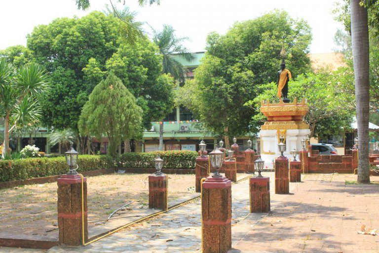

กำลังศึกษอยู่ชั้นมัธยมศึกษาตอนปลาย 4-6
ประวัติโรงเรียน โรงเรียน ศรีธาตุพิทยาคม ตั้งอยู่เลขที่ ๑๑๐ ถนนสมศิริ ตำบลศรีธาตุ อำเภอศรีธาตุจังหวัดอุดรธานี รหัสไปรษณีย์ ๔๑๒๓๐ สังกัดสำนักงานเขตพื้นที่การศึกษามัธยมศึกษา เขต ๒๐ เปิดสอนตั้งแต่ระดับชั้นมัธยมศึกษาปีที่๑ ถึงระดับชั้นมัธยมศึกษาปีที่๖ เนื้อที่ ๔๗ ไร่ ๓ งาน ๖๗ ตารางวา เขตพื้นที่บริการ ประกอบด้วยโรงเรียนในเขตตำบลศรีธาตุ ตำบลจำปี ตำบลนายูง ตำบลหนองนกเขียน โรงเรียน ศรีธาตุพิทยาคม ตั้งอยู่บนเนื้อที่ ๔๗ไร่ ๓ งาน ๖๗ ตารางวา ได้รับการบริจาคที่ดินก่อสร้างอาคารเรียนจากผู้ใหญ่บ้าน คือนายบาน สายทอง โดยได้รับการอนุมัติจากกรมสามัญศึกษาให้เปิดทำการสอนครั้งแรก ในระดับมัธยมศึกษาตอนต้น เมื่อวันที่ ๑๗ พฤษภาคม ๒๕๑๖ ใช้ชื่อโรงเรียนว่า “โรงเรียน ศรีธาตุอนุสรณ์” โดยใช้อาคารร่วมกับโรงเรียนชุมชนศรีธาตุ สังกัดสำนักงานการประถมศึกษาจังหวัดอุดรธานี โดยมีนักเรียนจำนวนทั้งสิ้น ๕๘ คน ครู-อาจารย์ ๓ คน ต่อมาได้สร้างอาคารเรียนถาวรขึ้นในพื้นที่ที่ได้รับบริจาค และเปลี่ยนชื่อโรงเรียนเป็นโรงเรียนศรีธาตุพิทยาคม มาจนถึงปัจจุบัน ในปีการศึกษา ๒๕๒๘ ได้รับอนุมัติ จากกรมสามัญศึกษาให้เปิดทำการสอนในระดับมัธยมศึกษาตอนปลายโรงเรียนศรีธาตุ พิทยาคม แบ่งโครงสร้างการบริหารงานเป็น ๕ ฝ่าย ได้แก่ บริหารงานทั่วไป บริหารงานวิชาการ บริหารงานงบประมาณ บริหารงานบุคลากร และการบริหารกิจการนักเรียน ผู้บริหารยึดหลักการบริหาร/เทคนิคการบริหารแบบใช้โรงเรียนเป็นฐานตามคู่มือ การบริหารสถานศึกษาขั้นพื้นฐานที่เป็นนิติบุคคล
